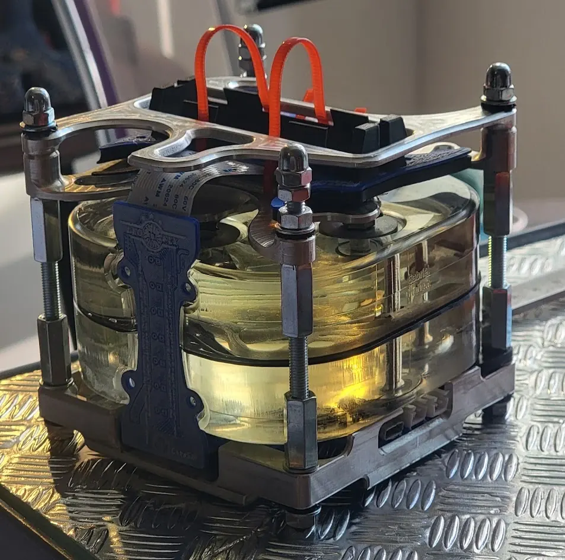
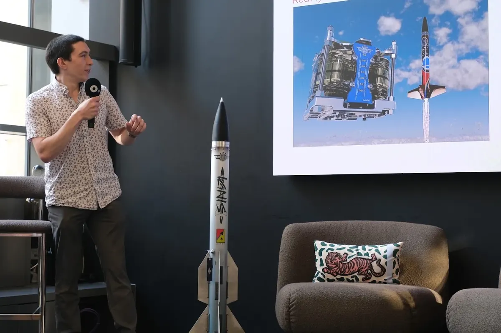
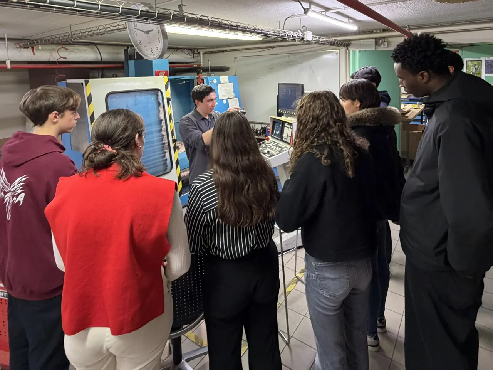
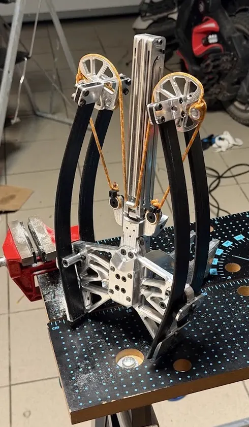
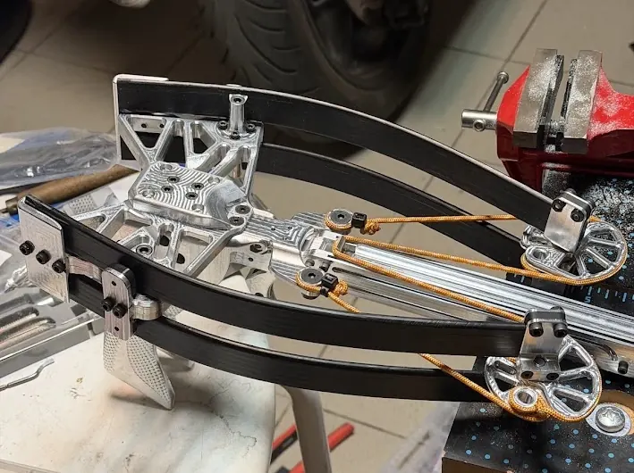
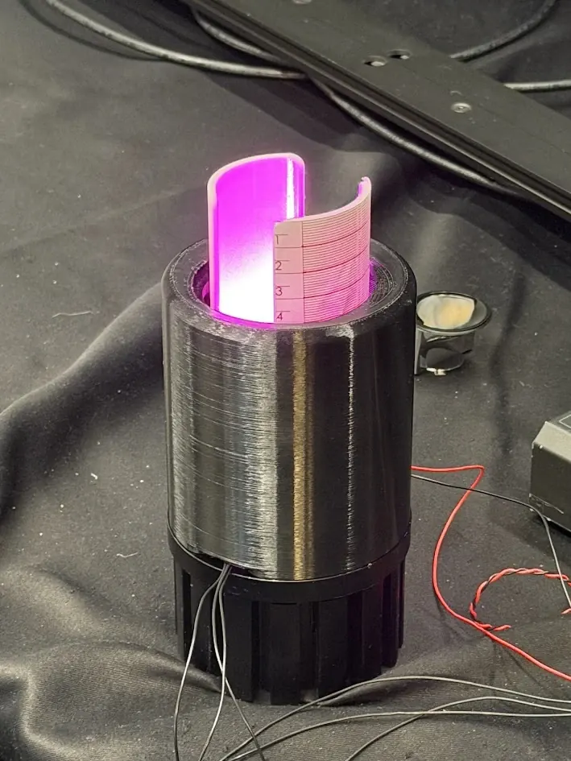
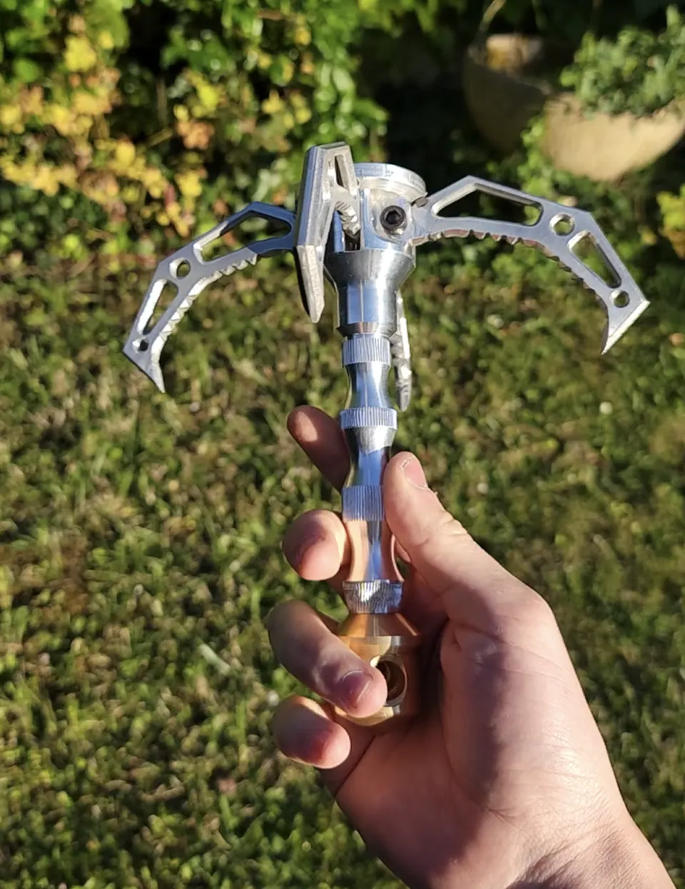
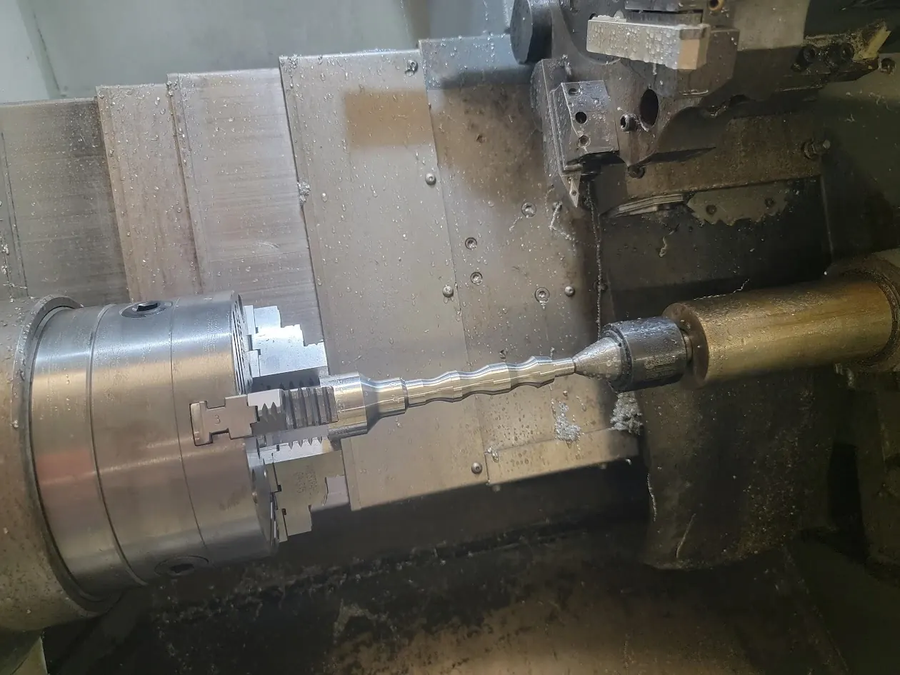
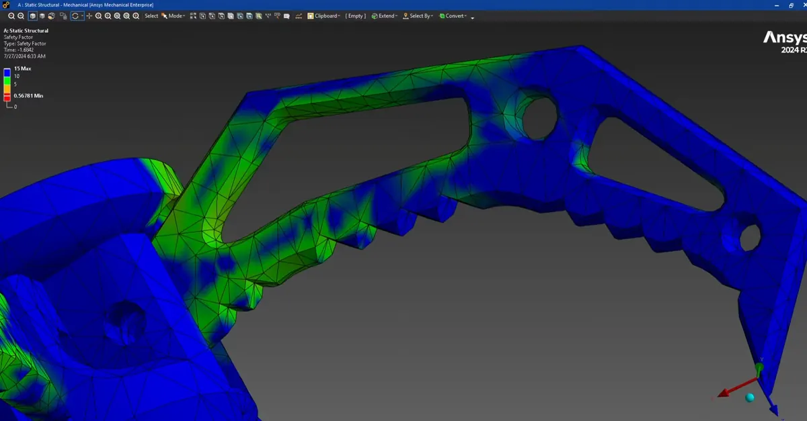
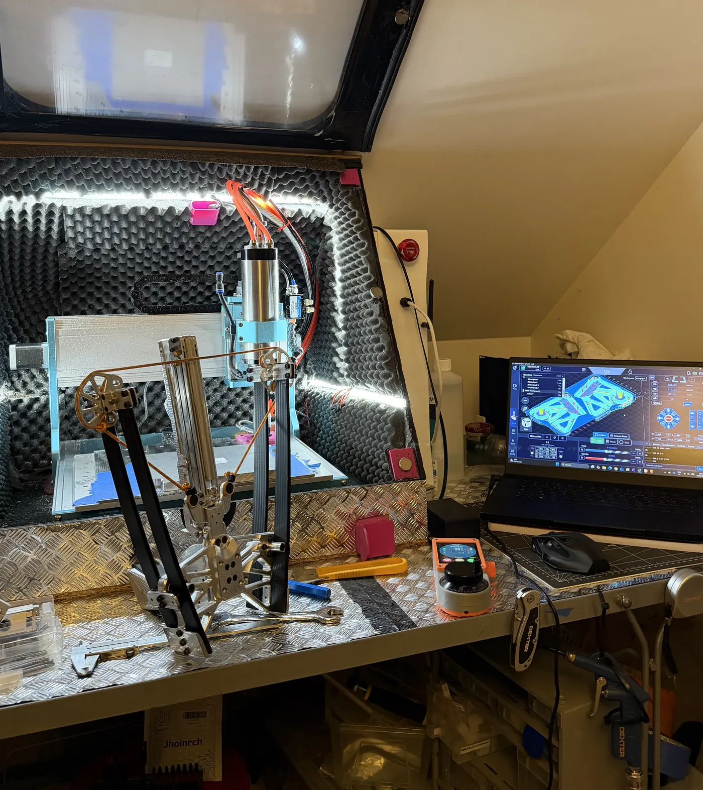

MAGNET
SPRING POM-C 0.7
PMMA OIL TANK
MAGNET
SPRING POM-C 0.7
PMMA OIL TANK
Magnetic accelerometer
A 1U CubeSat experiment for Léofly, my rocketry club. 2023 to 2026.
A magnet on a flat spring, damped in oil, read by two Hall sensors at 8 kHz. I designed the mechanics and the model that turns the two signals into an acceleration, then machined the parts.
- Format
- 1U100 × 100 × 100 mm
- Range
- ±17g; the rocket peaks at 15 g
- RMS error
- 2%, and 5 % at worst
- Sampling
- 8kHz, 2 Hall sensors

Where it started
In 2023 the club wanted to build a laser accelerometer. I read up on how they work and said it would be too complicated for us, but that we could probably make one with a magnet, a spring and a Hall sensor. I knew Hall sensors because I'd just repaired the throttle on my electric scooter.
How it works
A magnet sits on an ortho-planar spring: a flat disc cut with spiral slots, so its centre moves straight up and down without turning. When the rocket accelerates, the magnet moves. Two Hall sensors, one on each side, read the change in field, and a model turns the two signals into an acceleration. The spring sits in an oil bath so the magnet settles quickly instead of ringing after every shock.
From a strip of PLA to an ortho-planar spring
My first spring was just a thin strip of printed PLA bending under the magnet. Another student told me to look up ortho-planar springs, so I printed one. The final spring is machined from POM-C.
Reading the spring backwards
If the spring sits still at a given displacement, working out the acceleration is easy. Mine bounced around, so every reading depended on the magnet's inertia and on everything that had just happened before. At the same time I was taking a control-systems class, and I couldn't connect Laplace transforms to anything I could actually build. Then it clicked: this was a control loop backwards. A PID drives an input to get the output you want; I only had the wobbly output and needed to work back to the input that caused it. Needless to say, I passed the class.
What went wrong
In practice it wasn't clean. Just holding the prototype in my hand made it vibrate and resonate, and the signal was too messy to work back from. The more the old bounces leak into the reading, the worse it gets, so they had to die out faster: I needed to damp the mass. The spring was sensitive enough that I could afford to lose some of that. After a couple of damping attempts that didn't work, I bought a Tupperware and a bottle of vegetable oil and dropped the spring in. People thought I was crazy, until the signal, cleaned up in MATLAB and Simulink, started looking like a commercial sensor's.
The oil then caused a new problem: it crept up the Arduino's wires by capillary action. In the final build the loose wires became custom PCBs, the printed chassis became milled aluminium, and the Tupperware became a machined PMMA tank.
Calibration
The coefficients I calculated from measuring the parts gave me nothing usable. So I fitted the model to real recordings instead, which worked. Shaken next to a commercial accelerometer, it now follows it within 2 % RMS, 5 % at worst, over ±17 g. The rocket peaks at about 15 g.
Decisions
The spring material. The final spring is machined from POM-C, 0.7 mm thick, made with PBMC, one of the club's partners. POM-C creeps less under constant load, takes repeated bending better and isn't attacked by oil, while polycarbonate tends to crack under stress in contact with many oils. A machined part is also uniform; a printed one has layer lines that act like notches.
Tolerances from simulation. I ran a parametric Ansys study of manufacturing defects to see how far they move the spring's response, and set two specs from it: 0.02 mm parallelism between the faces, measured with the spring held flat, and Ra 0.8 µm.
The housing. Machined aluminium throughout. The oil tank is machined from PMMA so the spring stays visible, and the seals are printed in TPU 60A.
My part
I designed the mechanics and the mathematical model, laid out one of the three PCBs in KiCad, wrote the signal processing, ran the FEA and machined the parts. Julien Finkler designed the other two PCBs.





Léofly
ESILV's experimental rocketry club, since 2023. Rockets and payloads for the C'Space (CNES) and EuRoC campaigns.
I joined in 2023 and worked on the Xénon rocket (CAD, CAM, FEA). From 2024 to 2026 I was technical director, in charge of manufacturing, and since 2026 I've been the club's design and manufacturing referent.
- Led the teams on the Krypton rocket.
- Ran the CAD, CAM and machine-tool training for the members, on the school's CNC machines.
- Machined aluminium structure rings, steel and PMMA parts, and laid up carbon structures.
- Designed the CubeSat accelerometer above.
STAR-D, an experiment on REXUS 38
STAR-D (Space Test of Amoeba Response: Dictyostelium) uses the amoeba Dictyostelium discoideum to study how reduced gravity affects the early stages of the immune response, and whether this organism could stand in for human immune cells in future space experiments. It runs as a fully autonomous lab on the REXUS 38 sounding rocket, from launch to recovery, with a launch planned for March 2027. The team comes from ESILV, AgroParisTech, Newcastle University and the University of Vienna.
I wasn't on the team. They brought me in for the machining and to make their parts easier to manufacture:
- Machined the aluminium tank for the phase-change fluid, and printed its gaskets in TPU 60A, since nothing off the shelf had the right shape.
- Helped define the sealing tolerances and surface specifications.
- Reworked parts of the CAD to cut the cost of the parts outsourced to JLCCNC.
- Drew a large share of the connector box CAD and drawings.
- Adjusted the rails and other parts for an exact fit.



Reverse-draw crossbow
Personal project, designed and built from scratch. Still a prototype.


32 CNC-machined aluminium parts, third iteration after a PETG prototype and a laminated carbon one.
Why reverse draw
In a reverse-draw crossbow the limbs point back towards the shooter. The main reason: the limbs' inertia cancels out, so there's less recoil and the shot is more efficient. The string also travels further for the same width, and the weight sits closer to the grip. The trade-off is that the cams and the cocking mechanism get harder to design, which is the part I wanted to work on.
Decisions
One model drives everything. The SolidWorks assembly is driven by a shared equations file, so changing one dimension updates every part that depends on it.
Check before cutting aluminium. Each new geometry was tested in POM-C or 3D printed before I machined it. The limbs are glass fibre; I prototyped them in POM.
A simulator for the cocking mechanism. I built it with help from AI: I can change the shape and position of the parts live and the kinematics update instantly, so I can try ideas without going back into CAD.
Machining. 32 parts in 6061, 7075 and 5052 aluminium, held by 120 fasteners. Adaptive toolpaths, multi-operation fixtures, minimum-quantity lubrication.



Ambiance Lumière
Apprentice industrial design engineer (work-study), July 2025 to September 2027. A maker of custom architectural lighting in Alfortville, from prototype to small series.
- 54 high-end luminaire projects, 19 of them carried alone from the client's brief to the manufacturing drawings. Among them, a façade luminaire made 300 times with suppliers in France and Asia, and a luminaire for a luxury fashion house's 2025 Christmas campaign.
- Commissioned the company's CNC mill and machined its first parts.
- Luminaires for Notre-Dame de Paris during its restoration.
- I design custom tooling and measuring equipment for the workshop. One rig sets the distance between a lens and its LED with a twist of its top part, and reads it off engraved graduations.
- Thermal simulation, optical measurements, supplier follow-up.





Grappling hook
Personal project. 6061 aluminium and a brass tip. Featured in an article on ESILV's website (in French).


Turned and milled, with arms that fold along the shaft. The idea came from friends who wanted one for climbing.
Manual first, then CNC
I made the first version on manual machines. When I wanted more complex shapes, the workshop teacher told me to stop spending hours doing by hand what a CNC does better. So I redrew it for CNC and wrote the CAM myself: serrated arms, a knurled grip, and a brass tip, for the looks and for the weight at the bottom.
CNC and manual lathe and mill. The arms come out of plate stock with adaptive toolpaths; the shaft is turned between centres.




Carbon mudguard
For my 1,500 W electric bike: I scanned the bike with a phone app, designed the mudguard on the scan, printed the mould in four sections and laid up the carbon by hand.


CNC retrofit and GGSender
I rebuilt my CNC router around a FluidNC controller and a water-cooled 1.5 kW spindle driven over Modbus RS485. Then I forked the open-source gSender software into GGSender, with AI assistance, to rework the tool-change sequence so tools keep their full usable length, and to keep a persistent log of the controller traffic for diagnosis. Most parts on this page were cut on it.

BACKGROUND AND TOOLS
ESILV, Paris-La Défense: engineering degree (diplôme d'ingénieur, master's level), major in modelling and computational mechanics. 2022 to 2027, work-study since 2025. In 2027, nine weeks of hands-on welding training in Dublin.
I model in SolidWorks and Fusion 360, and have also worked in CATIA, 3DEXPERIENCE and Onshape. I program CAM in Fusion 360, 3DEXPERIENCE and Vectric Aspire. I run FEA in Ansys and Abaqus, plus thermal simulation, lay out PCBs in KiCad, and write Python, MATLAB, C++ and C#.
In the workshop: 3- and 4-axis CNC milling, CNC and manual turning and milling, fixtures, carbon composites, resin casting, FDM and SLA printing, and machine maintenance.
French (native), English C1 (TOEFL ITP 663/677), German (basics).
Pôle Léonard de Vinci: workshop and lab assistant, part-time, 2023 to 2024. I maintained the workshop's machine tools, installed safety devices and wrote technical documentation.
CONTACT
I'm looking for a permanent job (CDI) in manufacturing, industrialisation or methods engineering from September 2027, in the Paris area.
The card you scanned
Milled from aluminium plate on that same machine, raw finish. The disc in the middle is an ortho-planar spring, the same kind as in the accelerometer.
This is the engraving program I wrote for the back of your card, replayed: 25,354 lines of G-code, one 90° V-bit.